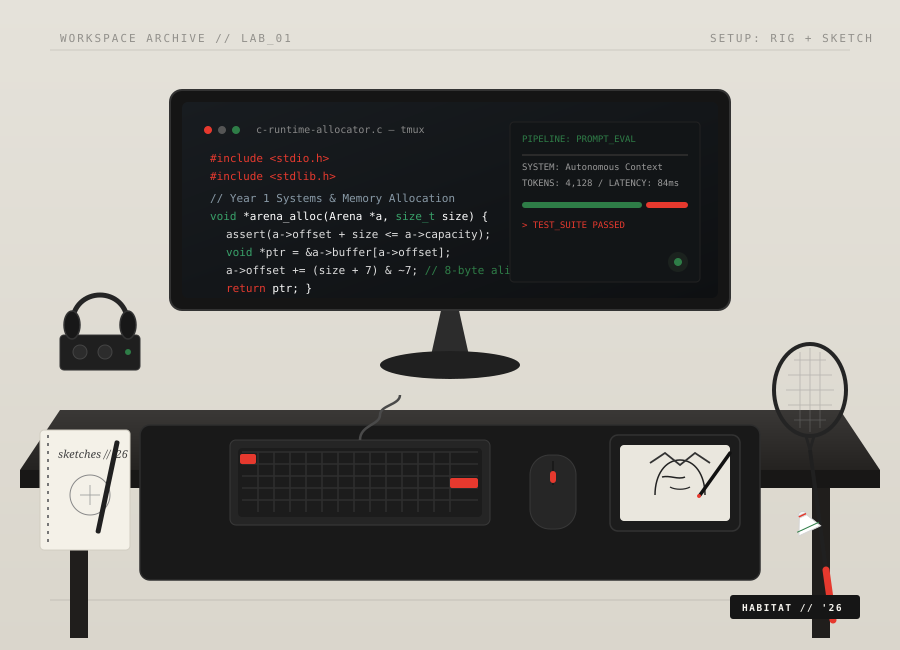

(01)
Prompt Engineering
“Clear prompts, useful systems, thoughtful results.”
Currently pursuing my B.Tech in Computer Science & Engineering in India. My journey started with pure curiosity: unravelling how operating systems govern CPU cycles and memory heaps, then scaling outward to orchestrating modern AI inference loops.
I believe true developer mastery doesn't come from passive tutorials, but from breaking things at the byte level. Whether writing custom terminal graphics engines in raw C or constructing deterministic prompt evaluation matrices, I treat code as both an engineering discipline and a creative craft.
HOVER CARDS TO INVERT ACCENTS · ARCHITECTED FOR FOUNDATIONAL STRENGTH
“Clear prompts, useful systems, thoughtful results.”
“Using AI to research, debug, and move ideas forward.”
“Learning memory, logic, and the foundations beneath software.”

Engineering isn't solely what happens at the compiler prompt. When stepping away from terminal debuggers and algorithmic proofs, I recharge through fast-paced badminton rallies on the court, sketching character illustrations with fine ink, and losing track of time inside immersive ambient soundscapes.
These tactile practices cultivate the same spatial patience required for systems engineering: observing patterns, executing deliberate movements, and appreciating elegant compositions.
An edge-computer-vision pipeline paired with an autonomous prompt model to identify hardware component waste and estimate carbon salvage metrics on local silicon.
A structured prompt-driven study companion that digests semester syllabi, isolates knowledge gaps, and produces interactive Socratic viva questions with deterministic feedback.
A 60-FPS terminal dungeon crawler written in ANSI C99 using double-buffered terminal escapements, custom arena memory allocators, and non-blocking I/O.
An interactive terminal visualizer rendering real-time memory chunk allocations, free-list pointer traversals, and alignment padding to teach freshmen pointer arithmetic.
When you understand that memory is just a contiguous sequence of numbered lockers, debugging higher-level runtimes ceases to be magic.
Moving past natural language chat toward typed JSON outputs, deterministic evaluation loops, and composable UNIX-style pipelines.
Why physical court rallies and analog sketchbooks are the most effective counterweights to 12-hour terminal debugging marathons.